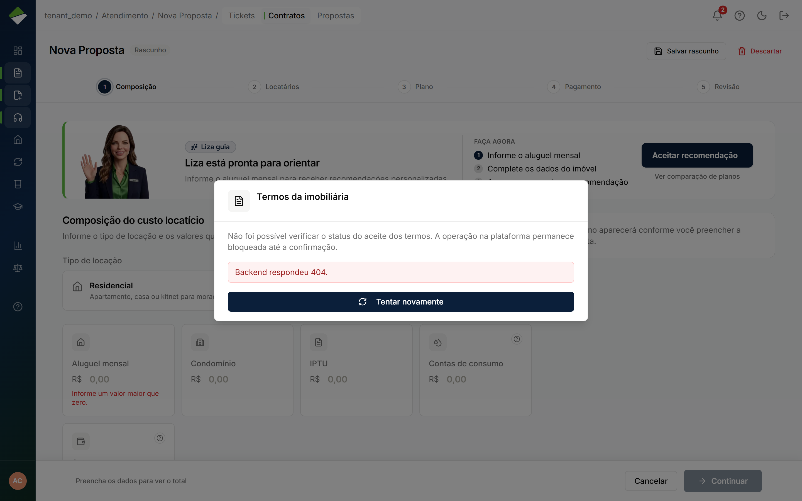
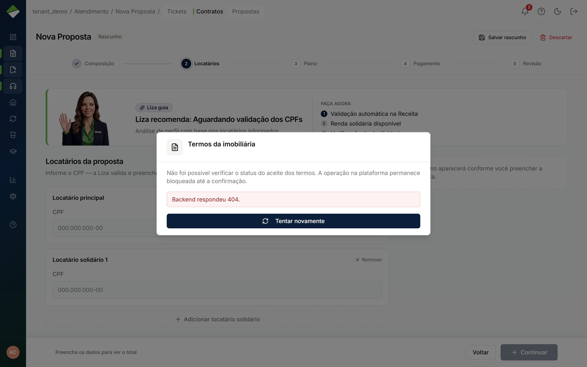
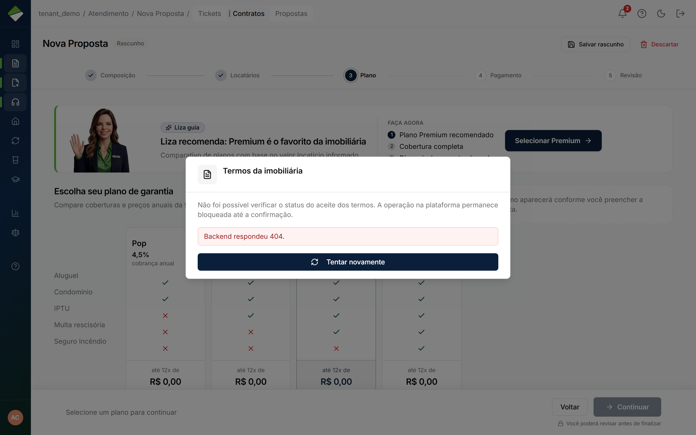
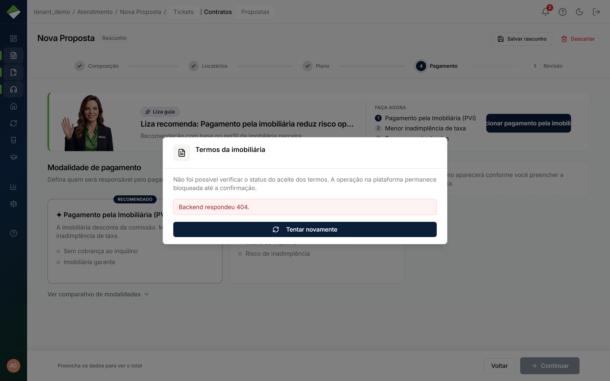

Originar garantia · jornada independente
Nova proposta
Dono do resultado: Imobiliária — Responsável da loja (corretor e gestor)
- Gatilho
- Corretor/gestor tem locatário + imóvel e clica em Nova proposta.
- Resultado
- Motor decide: aprovado, solidário, banca ou negado. A proposta acaba aqui para o corretor.
- Lifecycle
- Cada proposta é um ciclo. Não espera a banca (outro ator, outro gatilho).
- Atores na operação
- Corretor
corretor - Gestor da imobiliária
admin_imobiliaria
- Corretor
- Dono (setor)
- Imobiliária
- Outros setores
- Ninguém além do dono
Sequência interna (só aqui)
Estes momentos são obrigatórios dentro desta jornada. Não são o grafo global e não são o menu do papel.
-
Composição
Sem endereço e valores o wizard não anda.
-
Locatários
CPF do titular. Demo aprovado: 107.194.476-23.
-
Plano
Premium/Smart/Pop/Up — o motor ainda manda no desfecho.
-
Pagamento
Modalidade da garantia.
-
Revisão e simular
Único momento em que a sequência é obrigatória. Simular gera o desfecho.
Telas (evidência)
Superfícies atuais onde este ciclo aparece. Abrir a tela não significa avançar uma etapa.

/propostas · evidência, não etapa
/propostas/nova/composicao · evidência, não etapa
/propostas/nova/locatarios · evidência, não etapa
/propostas/nova/plano · evidência, não etapa
/propostas/nova/modalidade · evidência, não etapa
/propostas/nova/revisao · evidência, não etapaIsto não é esta jornada
- Histórico de crédito e limites do motor não fazem parte desta jornada.
- Aprovar na banca é outra jornada, com outro dono.